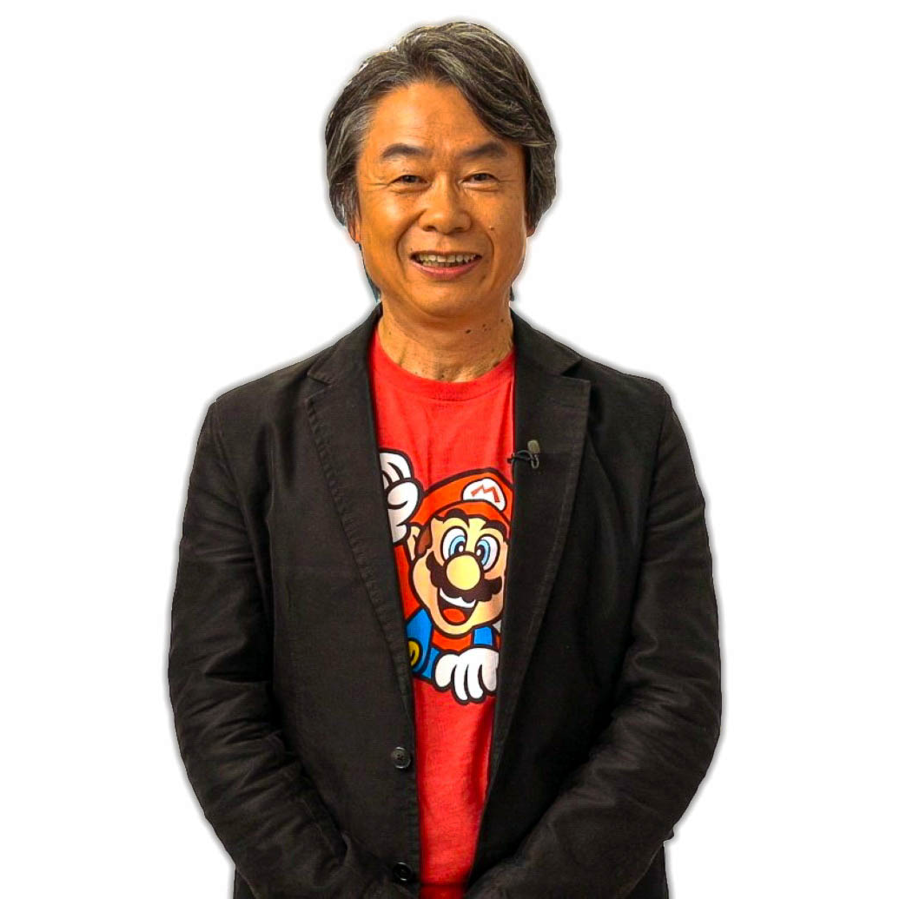

the launch of the nintendo entertainment system (nes) in 1985 revolutionized the gaming industry, helping to revive the video game market after the crash of 1983. with classic titles like super mario bros, the legend of zelda, and metroid, nintendo solidified its position as a leader in gaming.
in the years that followed, nintendo continued to innovate with the release of the game boy, the snes, and the nintendo 64. today, nintendo remains a beloved and influential force in the gaming world, known for its creativity and iconic franchises.
nintendo was founded in 1889 by fusajiro yamauchi in kyoto, japan. initially, it began as a playing card company. throughout the early 20th century, nintendo expanded its offerings, venturing into various businesses, including a taxi service and a love hotel, but it was not until the 1970s that the company found its true calling in the video game industry.
in 1977, nintendo released its first home console, the color tv-game, which featured built-in games. however, it was the arcade game donkey kong, released in 1981, that catapulted nintendo into the spotlight. this success led to the creation of the iconic character mario, who would become the face of the company.
Games From Nintendo
nintendo has been a pioneer in the gaming industry, creating beloved franchises that have captivated players for decades. starting with classics like donkey kong in 1981, nintendo introduced iconic characters such as mario and link, who became central figures in gaming culture. the release of the nes in 1985 marked a significant turning point, reviving the gaming market with hit titles like super mario bros. and the legend of zelda.
in 1996, nintendo launched the pokémon franchise, which quickly became a cultural phenomenon. the original games, pokémon red and green, allowed players to catch, train, and battle creatures in a vibrant world. this franchise expanded into trading cards, animated series, and movies, making it one of the most successful media franchises in history.
nintendo continued to innovate with the release of the game boy, introducing portable gaming to the masses. titles like tetris and pokémon solidified the handheld market. with the advent of the nintendo 64, 3D gaming became a reality, showcasing groundbreaking titles like super mario 64 and the legend of zelda: ocarina of time.
today, nintendo remains a beloved force in gaming, consistently delivering unique experiences and memorable characters that resonate with fans around the world.
Random Facts About Nintendo
1. Nintendo was originally founded in 1889 as a playing card company, producing handmade cards for a game called Hanafuda. It wasn't until the late 1970s that they ventured into video games.
2. The first Pokémon game, Pokémon Red and Green, was released in Japan in 1996. It introduced players to the world of capturing, training, and battling Pokémon, leading to a franchise that has become one of the most successful in gaming history.
3. The Super Mario franchise is one of the best-selling video game franchises of all time, with over 368 million units sold worldwide as of 2021. Mario, the iconic character, was originally created by Shigeru Miyamoto for the arcade game Donkey Kong in 1981.
4. The Legend of Zelda series was first released in 1986 and has since become one of the most beloved franchises in gaming, known for its intricate puzzles, exploration, and engaging storylines.
5. The Nintendo Wii, released in 2006, was a major success due to its innovative motion-sensing controls, which made gaming more accessible to a wider audience, including families and older adults.
 nintendo has been a pioneer in the gaming industry, creating beloved franchises that have captivated players for decades. starting with classics like donkey kong in 1981, nintendo introduced iconic characters such as mario and link, who became central figures in gaming culture. the release of the nes in 1985 marked a significant turning point, reviving the gaming market with hit titles like super mario bros. and the legend of zelda.
in 1996, nintendo launched the pokémon franchise, which quickly became a cultural phenomenon. the original games, pokémon red and green, allowed players to catch, train, and battle creatures in a vibrant world. this franchise expanded into trading cards, animated series, and movies, making it one of the most successful media franchises in history.
nintendo has been a pioneer in the gaming industry, creating beloved franchises that have captivated players for decades. starting with classics like donkey kong in 1981, nintendo introduced iconic characters such as mario and link, who became central figures in gaming culture. the release of the nes in 1985 marked a significant turning point, reviving the gaming market with hit titles like super mario bros. and the legend of zelda.
in 1996, nintendo launched the pokémon franchise, which quickly became a cultural phenomenon. the original games, pokémon red and green, allowed players to catch, train, and battle creatures in a vibrant world. this franchise expanded into trading cards, animated series, and movies, making it one of the most successful media franchises in history.